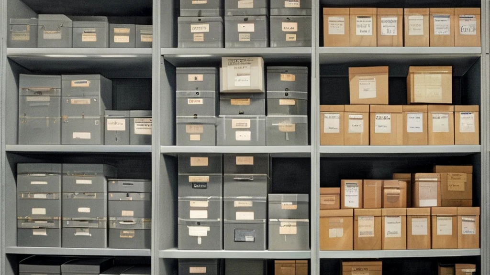
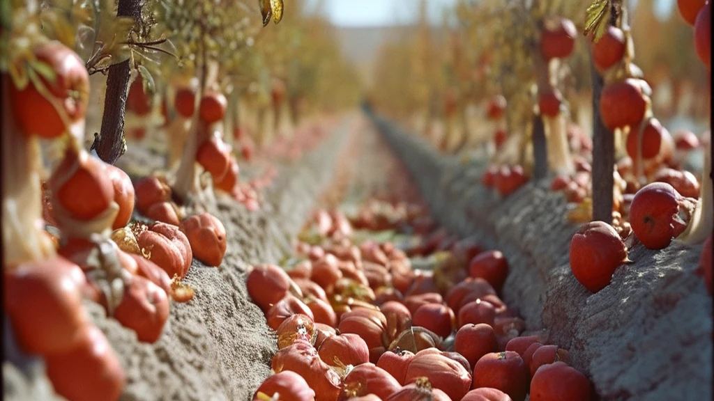
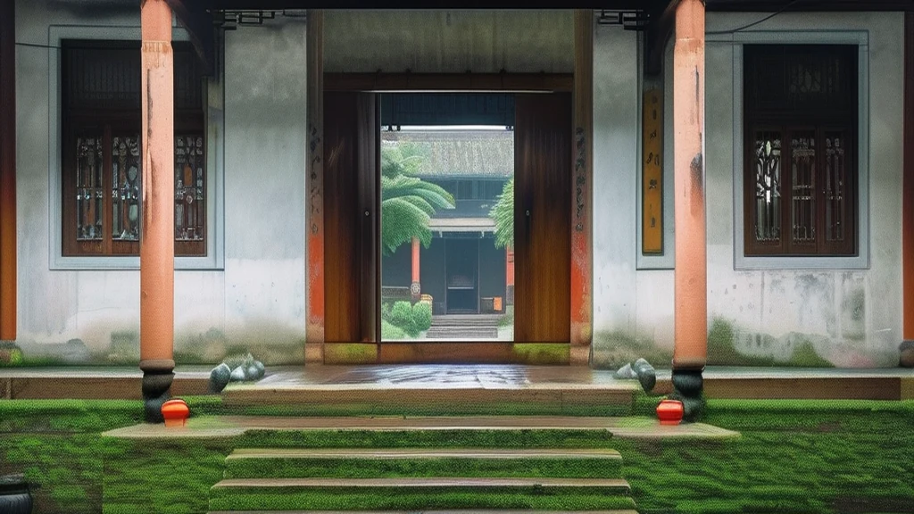
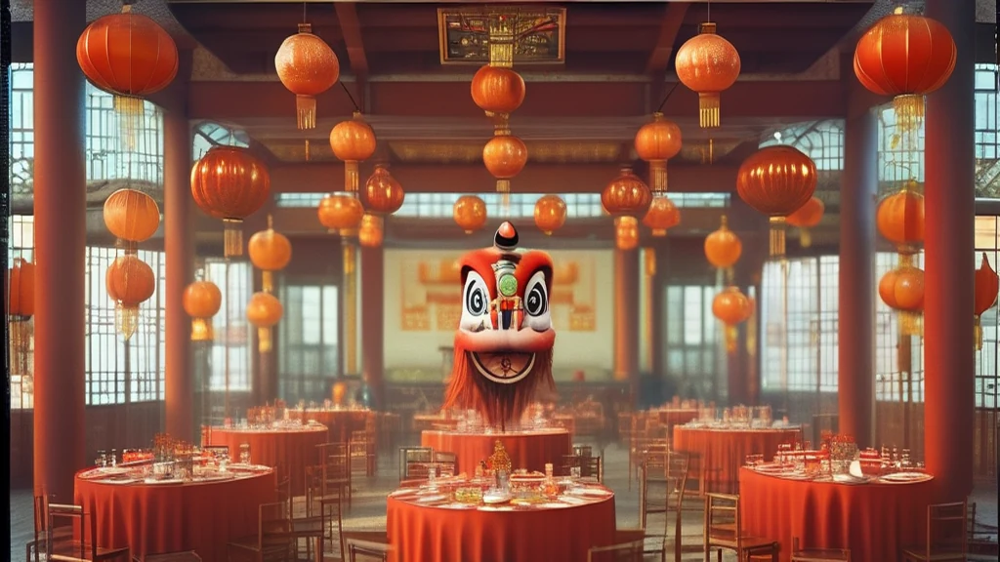

圖片由 AI輔助創作Image by AI
【鄭哥點評】欄目：鄭哥博客點評｜日期：2026-11-22
上個禮拜寫海陸豐啲戲，收尾一句係「非遺嘅風險係單點」。呢個禮拜講另一種單點：人。汕尾僑務部門話，旅外華僑華人同港澳台同胞一百四十幾萬；按市僑聯二〇一六年寫嘅戶籍人口三百五十二萬計，等於四成人喺外面。但同一個「僑」字，問三個部門，會拿到三個數。

圖片由 AI輔助創作Image by AI
一、三個部門，三本賬
先擺二〇二四年嘅數。廣東省僑辦轉南方+報導：汕尾係全省重點僑鄉之一，旅外華僑華人同港澳台同胞一百四十幾萬人，分佈喺印尼、馬來西亞、新加坡、澳洲等三十幾個國家；全市歸僑二千零二十三人、僑眷約五萬二千人、港澳台僑資企業七百一十七家。僑團八個，例如馬來西亞海陸會館同新加坡海陸豐會館。
再擺二〇一六年嘅數。汕尾市僑聯簡介寫：旅外華僑華人七十五萬，港澳台同胞一百一十三萬，歸僑五千多人，僑眷僑屬三十三萬人；編制七人。兩份都係官網，隔八年，唔係邊個寫錯——係「僑」從來冇統一戶口：僑聯數喺冊嘅人，僑辦數喺外嘅人，社團數入咗會嘅人。香港廣東汕尾市同鄉總會一九六〇年成立，二〇一五年第四十屆會長致辭講「團結六十萬居港鄉親」。三個數，三本賬，各自都真。
來源：廣東省僑辦（2024-05-17）；汕尾市僑聯（2016）；潮青網（2015）｜http://www.qb.gd.gov.cn/dfqw/content/post_1243413.html

圖片由 AI輔助創作Image by AI
二、一九五二年，十三個國家嘅人搬到同一條村
僑區嘅起點唔係僑團，係農場。汕尾市華僑管理區前身係陸豐華僑農場，一九五二年創辦，係國家最早安置歸難僑嘅基地之一。南方日報二〇一七年寫，農場先後安置十三個國家同地區嘅歸僑逾萬人；官方簡介寫：九個村（社區），戶籍人口約兩萬，歸僑僑眷約五千五百人。僑史館老歸僑林萬雲記得，一九六〇年嗰批人係坐郵輪返嚟嘅。
今日僑區二十八平方公里，近三萬畝國有土地，一萬六千畝果園，奎池油柑同紅楊桃係招牌；二〇二三年全區生產總值六億六千一百萬，農業總產值兩億一千萬，增速全市第一。官方材料仲有句「二十七把鋤頭」拓荒。一個地方嘅創業史壓縮成一把鋤頭，說明當年真係得咁多嘢剩低。
來源：汕尾市政府（2024-03-25）；南方日報（2017-01-31）；陸豐市政府（2025-07-23）｜https://www.shanwei.gov.cn/slhwz/rdgz/content/post_1022655.html

圖片由 AI輔助創作Image by AI
三、一九三八年，佢哋由香港返嚟
僑唔止係匯款單。陸豐政協文史資料寫，一九三八年初，海陸豐旅港回鄉服務團率先返到陸豐，成員有劉廷光、陳真等。陳真喺印尼經商，募捐散傳單時被當地特務發覺，驅逐出境，輾轉到香港再加入。翌年東江華僑回鄉服務團成立，兩團改編為第二團；一九三九年十月，吉隆坡嘅海陸豐隊專程到陸豐。
一九三八年春，陸豐縣第一次工委會議喺尉城龍潭村劉家祠召開，劉廷光任書記。呢批人帶返嚟嘅唔係錢，係方法：開會、分工、辦《陸豐青年》、搞歌詠隊、落區建分會。僑鄉喺抗戰年代嘅價值，唔係捐幾多，而係有班識得兩邊走嘅人。
來源：陸豐政協網（2017-01-19）｜http://www.lfszx.gov.cn/history/471.html

圖片由 AI輔助創作Image by AI
四、二〇二五年悉尼，四百人睇一場英歌舞
跳到二〇二五年九月。汕尾日報報導，澳洲汕尾同鄉會第三屆理監事就職典禮喺悉尼舉行，主題「凝聚鄉情、傳承文化、共促發展」；同鄉會二〇一八年成立。現場四百幾人，線上過萬，中國、新加坡、美國、日本、印尼嘅社團代表都到。台上坐嘅有全國政協委員吳華江、中國駐悉尼總領事館僑務領事、帕拉馬塔市副市長陳瀟，同澳門、新加坡社團會長。會長曾海川致辭講「敢為天下先」。
節目單照抄：《汕尾謠》演唱、二胡獨奏、國家級非遺英歌舞，仲有慈善拍賣。呢個就係我成日講嘅事：非遺出海，載體唔係文旅局嘅項目書，係同鄉會嘅年會。英歌舞喺悉尼台上跳，台下坐住港澳同新馬社團——一個晚上，五個國家同地區嘅海陸豐人喺同一個廳。
來源：汕尾日報（2025-09-29）｜https://www.shanwei.gov.cn/shanwei/zwgk/jcxx/zwdt/rdgz/content/post_1188289.html
圖片由 AI輔助創作Image by AI
五、十二個人，管五萬八千平方米
最後講錢。僑區資產擺喺一個國資平台：汕尾市華僑管理區投資控股有限公司，二〇二〇年六月成立，國有獨資，註冊資本八千萬元。今年九月陸豐市政府網站貼咗佢嘅基本情況：在崗正式人員十二人，後勤兩人；下設三個部門共十人；全資物業公司四個人。
資產表：物流配送中心六棟樓，總建築面積五萬八千六百二十點二六平方米；前海綜合市場一萬三千八百八十七平方米。二〇二三年冷鏈物流中心同前海市場投產，營業收入一百八十幾萬。十二個人、五萬八千平方米、一百八十萬——三個數擺埋一齊，僑鄉下半場講嘅唔係鄉情，係坪效同人手。
來源：陸豐市政府（2026-09-01）；汕尾市政府（2024-03-25）｜http://www.lufengshi.gov.cn/swlufeng/zt/hqglq/gzdt/content/mpost_1305235.html
圖片由 AI輔助創作Image by AI
六、鄭哥點評：僑鄉嘅資產係組織，唔係匯款
僑鄉唔係情懷詞，係三張表：統計表、組織表、資產表。三張表對唔上，好正常；對唔上都唔去對，就係問題。
做出海生意，僑團係現成渠道，但佢哋嘅 KPI 係鄉情，唔係訂單。搵人之前問清楚：邊個決策、邊個有預算、邊個只係熱心。主家席嗰幾個社團代表，才係傾得事嘅人。
我哋自己嘅廠一樣：接單能力唔係產能，係跟單人手。十二個人管五萬八千平方米，做過廠就知，倉唔會自己盤，單唔會自己跟。
汕尾最值錢嘅出口，八十年嚟都唔係貨，係人。人走出去，錢同組織跟住走；人返嚟，帶嘅係方法。
圖片由 AI輔助創作Image by AI
\[Zheng Ge's Take\] Column: Zheng Ge's blog commentary | Date: 2026-11-22
Last week I wrote about the old operas of Hailufeng and ended on the line that the real risk to intangible heritage is not a lost craft but a single point of failure. This week I want to talk about another single point: people. Shanwei's overseas Chinese affairs office says more than 1.4 million people of Shanwei origin live abroad or in Hong Kong, Macao and Taiwan. Measured against the 3.52 million registered residents the city's Returned Overseas Chinese Federation quoted in 2016, that is four in ten living outside. Yet ask three departments about the same word, qiao, and you get three different numbers.
圖片由 AI輔助創作Image by AI
1. Three departments, three ledgers
Start with the 2024 figures. A Southern Plus report carried by the Guangdong provincial overseas Chinese affairs office states it plainly: Shanwei is one of the province's key qiaoxiang, with more than 1.4 million people of Shanwei origin living overseas or in Hong Kong, Macao and Taiwan, spread across Indonesia, Malaysia, Singapore, Vietnam, the United States, Australia and more than thirty other countries and regions. The city counts 2,023 returned overseas Chinese, about 52,000 family members of overseas Chinese, and 717 Hong Kong, Macao, Taiwan and overseas-funded enterprises. The list of Shanwei-origin associations abroad runs to eight: the Malayan Hailu Association, the Malacca Huizhou Association, the Medan Goose City Charity Foundation in Indonesia, the Singapore Hailufeng Association, the Australia Shanwei Association, the US Shanwei Association, the Canada Shanwei Luhe Association, and the Vietnam Shanwei Hailufeng Association.
Now the 2016 figures. The Shanwei Returned Overseas Chinese Federation's own profile says: 750,000 overseas Chinese, 1.13 million Hong Kong, Macao and Taiwan compatriots, more than 5,000 returned overseas Chinese, 330,000 relatives, and a staff establishment of seven. Both pages are official. Eight years apart, neither is a misprint. The word qiao has never had a single household register: the federation counts returned migrants and their families on the books, the affairs office counts people still outside, the associations count people who joined. The Hong Kong Guangdong Shanwei Native Place Association was founded in July 1960 as the Hailufeng Fellowship, and when it installed its fortieth board in 2015 the incoming chairman spoke of uniting 600,000 Shanwei people in Hong Kong. Three numbers, three ledgers, each of them true.
Source: 廣東省僑辦（2024-05-17）；汕尾市僑聯（2016）；潮青網（2015） | http://www.qb.gd.gov.cn/dfqw/content/post_1243413.html
圖片由 AI輔助創作Image by AI
2. In 1952, people from thirteen countries moved into one settlement
The settlement did not begin with an association but with a farm. Today's Shanwei Overseas Chinese Management District was Lufeng Overseas Chinese Farm, founded in 1952 and one of the country's earliest bases for resettling returned and displaced Chinese. Southern Daily reported in 2017 that the farm took in more than ten thousand returnees from thirteen Southeast Asian countries and regions including Indonesia, Malaysia and Vietnam. The official profile adds the detail: one sub-district office, nine villages and communities, about twenty thousand registered residents, of whom some 5,500 are returnees and their families. The resettlement came in three big waves - the 1950s, the 1960s and the late 1970s. Lin Wanyun, an elderly returnee who narrates the district's history museum, recalls that the 1960 cohort came home by ocean liner.
The district covers 28 square kilometres, with nearly 30,000 mu of state land and 16,000 mu of fruit orchards; Kui Chi oil mandarin and red wax apple are the signature crops. In 2023 gross domestic product reached 661 million yuan and agricultural output 210 million, the fastest growth in the city. Official material keeps repeating one phrase: the pioneers who broke the ground with twenty-seven hoes. When a place compresses its founding story into a single hoe, it usually means that is about all there was.
Source: 汕尾市政府（2024-03-25）；南方日報（2017-01-31）；陸豐市政府（2025-07-23） | https://www.shanwei.gov.cn/slhwz/rdgz/content/post_1022655.html
圖片由 AI輔助創作Image by AI
3. In 1938 they came back from Hong Kong
Qiao was never only about remittance slips. Lufeng's political consultative conference records that in early 1938 the Hailufeng Hong Kong Returnees Service Corps was the first to arrive back in Lufeng, among them Liu Tingguang, Zhu Rong, Lin Rui, Chen Zhen, Huang Guoxiong, Liu Jingshan and Zheng Bangying. Before returning they raised money where they lived: Chen Zhen, a trader in Indonesia, was spotted by local agents while collecting donations and handing out leaflets, deported, and made his way to Hong Kong to join the corps. The next year the East River Overseas Chinese Returnees Service Corps was formed and the two units were reorganised into its second regiment; in October 1939 the Kuala Lumpur Hailufeng team travelled to Lufeng specifically for the work.
In the spring of 1938 the first working committee of Lufeng county met at the Liu family hall in Longtan village, with Liu Tingguang as secretary, Huang Xiong on united front work, Guo Jian on propaganda and Lin Rui on peasant affairs, while each district set about building its own branch. What these people brought back was not money but method: meetings, division of labour, a journal called Lufeng Youth, a singing troupe, branches opened district by district. The value of a qiaoxiang in wartime was not the size of the donation but the existence of people who could move between outside and inside.
Source: 陸豐政協網（2017-01-19） | http://www.lfszx.gov.cn/history/471.html
圖片由 AI輔助創作Image by AI
4. Sydney, 2025: four hundred people watching a Yingge dance
Jump to September 2025. Shanwei Daily reported that the third board of the Australia Shanwei Association was inaugurated in Sydney under the theme gathering fellow natives, passing on culture, promoting development together; the association was founded in 2018. More than four hundred people attended in person and over ten thousand watched the livestream; delegations from Shanwei communities in China, Singapore, the United States, Japan and Indonesia were all present. The people on the stage deserve naming: Wu Huajiang, national political consultative conference member and chairman of the Hong Kong Guangdong Shanwei Native Place Association; Ren Shuangjie, consular official for overseas Chinese affairs at the Chinese consulate in Sydney; Chen Xiao, deputy mayor of Parramatta; Chen Tiehao, chairman of the Macao Shanwei Association; and Zhong Xiumin, acting chairman of the Singapore Hailufeng Association. Chairman Zeng Haichuan spoke of the Hailufeng spirit of being first under heaven to try.
The programme, copied out in full: a song called Ballad of Shanwei, an erhu solo, and Yingge dance, a national-level intangible heritage. There was also a charity auction, with proceeds going to the association and to charity. This is what I keep saying: intangible heritage does not go abroad on a cultural bureau project document, it goes on an association's annual dinner. Yingge was danced on a Sydney stage with Hong Kong, Macao and Southeast Asian associations in the audience - five countries and regions of Hailufeng people in one hall for one evening. If you want to export culture, the channel already exists and needs no tender.
Source: 汕尾日報（2025-09-29） | https://www.shanwei.gov.cn/shanwei/zwgk/jcxx/zwdt/rdgz/content/post_1188289.html
圖片由 AI輔助創作Image by AI
5. Twelve people running 58,000 square metres
Finally, the money. The district's assets sit inside a state-owned platform: Shanwei Overseas Chinese Management District Investment Holdings, incorporated on 23 June 2020, wholly state-owned, with registered capital of 80 million yuan. In September this year the Lufeng government website posted its particulars: twelve full-time staff plus two support staff; two senior managers; three departments with four, three and three people. The wholly owned property company has four staff. Xinqiao Industrial has no dedicated headcount at all; its business is run by the parent.
The asset list reads well: a logistics distribution centre of six buildings totalling 58,620.26 square metres; the Qianhai general market at 13,887 square metres; a rural makers' base of 2,475.42 square metres; the Qiaoqing Guli farmstead at 940.8 square metres; and a mineral water exploration right over 0.14 square kilometres. In 2023 the cold-chain centre and the Qianhai market went into operation and brought in more than 1.8 million yuan of revenue. Twelve people, 58,000 square metres, 1.8 million - put those three numbers side by side and the second half of the qiaoxiang story is not about nostalgia, it is about revenue per square metre and headcount.
Source: 陸豐市政府（2026-09-01）；汕尾市政府（2024-03-25） | http://www.lufengshi.gov.cn/swlufeng/zt/hqglq/gzdt/content/mpost_1305235.html
圖片由 AI輔助創作Image by AI
6. My take: the asset of a qiaoxiang is organisation, not remittance
By the end of this piece the point I most want to make is this: a qiaoxiang is not a sentimental word, it is three tables - a statistical table, an organisational table and an asset table. It is normal for them not to match. Never trying to reconcile them is the problem.
For anyone selling abroad, the associations are a ready-made channel, but their KPI is belonging, not purchase orders. Before you go looking for someone, work out who decides, who holds a budget, and who is merely enthusiastic. Of the four hundred people in Sydney that evening, the five association leaders at the head table are the ones you can actually do business with.
Our own factory is no different. Order capacity is not production capacity, it is follow-up headcount: twelve people running 58,000 square metres sounds absurd, but anyone who has run a plant knows that warehouses do not count themselves and orders do not chase themselves. More assets and fewer people shows up as revenue per square metre on the books and as delays on the floor.
Shanwei's most valuable export has not been goods for eighty years. It is people. When people go out, money and organisation follow; when they come back, they bring method. That ledger is thicker than any single remittance slip.